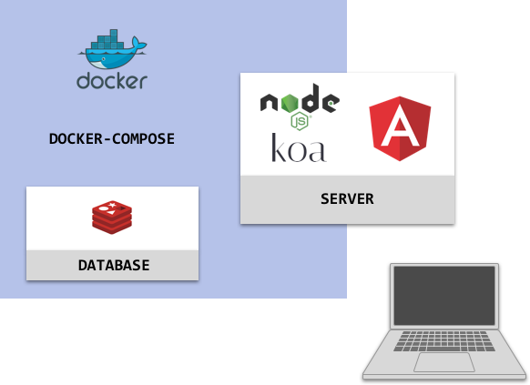
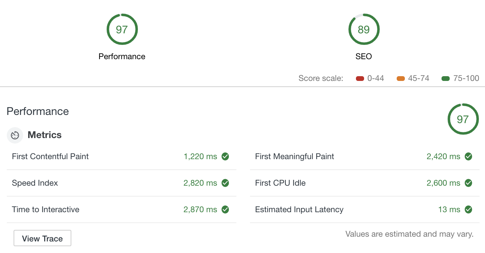

I have been using LastPass for a few months now to store my credentials. The cloud-based password manager is a great convenience, as you only have to remember a single "master" password to gain access to all of your other passwords. Also, LastPass will generate secure passwords for you. Since you don't have to remember them,
you can generate passwords that are almost impossible for a hacker to crack. For instance, brute-force attacking a 12-character password containing one special character could potentially take two centuries.
One might be hesitant, however, to put faith in the security of a system that stores and transmits highly sensitive user data over the internet. The security architecture of LastPass is very good, yet has been compromised once before (Read about it here.)
After researching LastPass security, I started thinking of a way save encrypted passwords over the internet that could only be decrypted by the password owner. That is, I want to send my passwords to "Password Manager", but I don't want "Password Manager" to know what my passwords are. Running with this idea, I created a proof-of-concept, passwd.
DEVELOPMENT ARCHITECTURE

I took a minimalist approach with this implementation, utilizing Angular 7, Node.js (Koa), and Redis in a docker-compose orchestration. Clients are served angular assets via Koa. Session cookies and passwords are stored encrypted in Redis. The Angular application is a PWA (Progressive Web App,) which means it should perform well on mobile devices. An audit in the Chrome inspector gives the passwd application a decent score.

The conceptual difference between passwd and LastPass is that in passwd, users are required to create a "primary" password (to login), as well as a secondary password to encrypt their passwords before the passwords are sent onto the internet. The secondardy password is never sent to the server, so it must be remembered by the user or else all of the user's passwords will be unrecoverable.
Feel free to try it out. You only need to create an account to start storing encrypted credentials. However, be warned, this is merely a proof-of-concept and is not intended for serious use. There is no guarantee that the data you enter will persist.